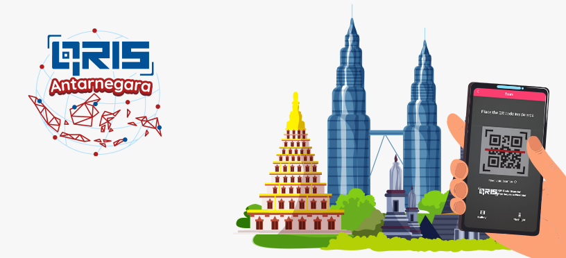

QRIS Cross-Border
- Di era digital saat ini, pembayaran elektronik telah menjadi bagian penting dari kehidupan sehari-hari. Transaksi non-tunai, termasuk pembayaran menggunakan kode QR (Quick Response), semakin populer di seluruh dunia.

- QRIS (Quick Response Code Indonesian Standard) adalah standar kode QR yang dikembangkan di Indonesia oleh Bank Indonesia dan ASPI (Asosiasi Sistem Pembayaran Indonesia) dengan tujuan untuk membantu dalam proses pembayaran elektronik dan transfer dana.
Penggunaan QRIS sangatlah mudah hanya dengan memindai kode QR dengan menggunakan ponsel pintarnya sudah dapet membayar segala macam pembayaran. QRIS ini sudah didukung berbagai Mobile Banking Bank yang ada di Indonesia maupun aplikasi Non Bank seperti (Gopay, Ovo, Dana, Linkaja, Shopee, dll) dengan limit per transaksi Rp 20 Juta.
- Sampai saat ini pengguna QRIS telah mencapai 32,41juta user dan 25.4juta merchant dengan tingkatan kurs yang selalu meningkat di setiap tahunnya, dengannya QRIS akan memperluas jangkauan bukan hanya di Indonesia saja melainkan di negara anggota ASEAN dengan sebutan QRIS Cross-Border.

- Saat ini QRIS Cross-Border sudah dapat digunakan di negara Thailand dan Malaysia dan akan diimplementasikan di negara Singapura dan Filipina. Ini merupakan inisiatif Bank Indonesia dalam hal mewujudkan konektivitas sistem pembayaran dengan Bank Sentral lain di kawasan ASEAN yang mendukung pembayaran yang lebih cepat, murah, transparan dengan harapan dapat mendorong percepatan pemulihan ekonomi dan mendukung pertumbuhan ekonomi yang lebih inklusif.
- Penting untuk diingat bahwa implementasi QRIS Cross Border biasanya melibatkan berbagai aspek teknis, peraturan, dan kerjasama antarlembaga keuangan. QRIS Cross Border adalah langkah positif dalam memfasilitasi perdagangan internasional dan pertumbuhan ekonomi global dengan mempermudah proses pembayaran di lintas negara. Oleh karenanya Bank Indonesia mengatur penggunaan QRIS untuk memastikan keamanan dan kepatuhan dalam transaksi pembayaran elektronik. Standar keamanan diterapkan untuk melindungi data dan dana pengguna. Oleh karena itu, penting bagi pengguna untuk menggunakan aplikasi pembayaran yang tepercaya dan memverifikasi setiap transaksi.
- Memindai kode QR yang sudah di sediakan di merchant yang ada dengan menggunakan aplikasi Mobile Banking atau Non Bank.
- Setelah muncul rincian tujuan pembayaran, penguna hanya perlu mengisi jumlah yang harus di bayarkan.
- Memastikan kembali jumlah pembayaran serta no tujuan pembayaran, kemudian masukan kode PIN QRIS.
- Transaksi selesai
- Merchat membuatkan kode QR di mesin EDC.
- Setelah kode QR dibuat, hanya perlu memindai kode QR maka semua rincian transaksi sudah lengkap berserta jumlah transaksi yang akan di bayarkan.
- Mengkonfirmasi kode PIN QRIS.
- Transaksi Selesai.
Mekanisme penggunaan QRIS, sebagai berikut:
Mekanisme pembayaran QRIS memiliki 2 tipe penggunaan, dengan mekanisme ini pengguna dapat mengikuti dengan langkah-langkah yang tepat agar transaksi lebih cepat, mudah, murah, aman dan handal dalam setiap transaksinya, dengan mekanisme sebagai berikut :1. QRIS Statis
QRIS ini adalah jenis kode QR yang tetap artinya hanya dengan satu QR dapat digunakan berkali-kali dengan jumlah pembayaran yang berbeda-beda di setiap transaksinya, biasanya di gunakan oleh berbagai merchant berskala micro atau kecil, dengan mekanisme sebagai berikut :2. QRIS Dinamis
QRIS ini umumnya memiliki jenis kode yang berbeda-beda disetiap transaksinya, biasanya di gunkaan oleh merchant berskala menengan keatas, dengan mekanisme sebagai berikut :- Efisiensi transaksi : Dengan adanya program QRIS Cross Border ini dapat memudahkan merchant dalam proses transaksi untuk melayani konsumen dari luar negri.
- Biaya transaksi lebih rendah : Dibandingkan dengan pembayaran kartu kredit, biaya transaksi QRIS Cross Border akan cenderung lebih rendah, sehingga mengurangi beban biaya merchant/perusahaan.
- Transparansi dan rekam transaksi : Merchat dapat melihat riwayat transaksi dengan jelas yang memudahkan manajemen keuangan dalam pemantauan penjualan perusahaan.
- Akses pemasaran yang lebih luas : Dapat meningkatkan daya tarik bagi merchat, karena mereka dapat melayani konsumen dari dalam negri maupun luar negri dengan berbagai aplikasi pembayaran, sehingga dapat mencapai pasar yang lebih luas.
- Keamanan : tidak perlu uang tunai untuk kembalian dan memungkinkan mengurangi risiko penerimaan uang palsu.
- Kemudahan dan kecepatan : Konsumen dapat dengan mudah melakukan pembayaran hanya dengan memindai kode QR pada aplikasi pembayaran mereka, mengurangi waktu yang diperlukan untuk bertransaksi.
- Rekam transaksi : Pembeli dapat dengan mudah melacak transaksi pembayaran mereka melalui riwayat transaksi dalam aplikasi pembayaran. Hal ini berguna untuk mengelola anggaran keuangan pribadi di Negara lain.
- Tidak perlu uang tunai : QRIS Cross Border memungkinkan konsumen untuk bertransaksi tanpa uang tunai, sehingga tidak perlu khawatir dengan tidak membawa uang tunai mata uang negara asing.
- Keamanan : Penggunaan QRIS membantu mengurangi risiko membawa uang tunai atau kartu kredit fisik sehingga tidak perlu khawatir tentang kehilangan uang atau kartu.
Manfaat QRIS Cross Border, sebagai berikut :
Dengan adanya penjelasan diatas QRIS Cross Border memiliki manfaat yang signifikan baik bagi produsen ataupun konsumen dalam konteks pembayaran elektronik. Berikut adalah beberapa manfaat utama dari penggunaan QRIS Cross Border bagi kedua belah pihak:1. Manfaat bagi produsen :
2. Manfaat bagi konsumen :
- QRIS Cross Border memberikan manfaat yang signifikan bagi produsen ataupun konsumen, dan juga telah memainkan peran penting dalam mendorong adopsi pembayaran digital di banyak negara. Dengan kecepatan dan kemudahan transaksi, serta biaya yang lebih rendah, QRIS adalah alat yang efektif untuk mendukung pertumbuhan ekonomi dan modernisasi sistem pembayaran.